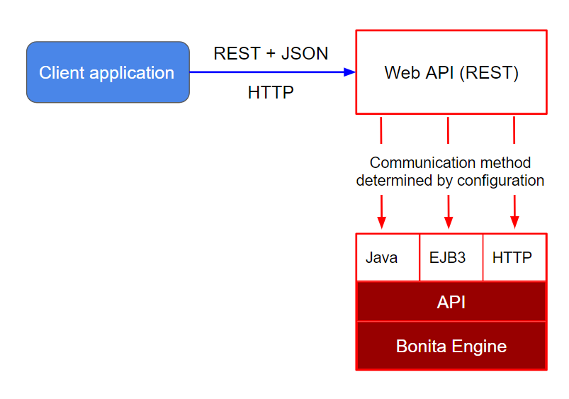

REST API overview
This page contains an overview of how to integrate an application with Bonita using REST.
Overview
If your application is using a technology other than Java, you can integrate it with the Bonita solution using the Web REST API. This API provides access to all Bonita objects (like processes, tasks, users, connectors etc.), to execute operations on them (create, retrieve, update, delete). You can use these operations to create a workflow with Bonita and integrate it into your application. The Bonita Engine remains responsible for executing the workflow logic (connectors, gateways with conditions, messages, timers etc.) while your application gives access to the workflow. Users can manage processes and tasks, and perform administrative activities.
Access to the Web REST API depends on REST API authorization settings.

Phases of operation
There are three phases of operation for an application that is integrated with Bonita through the Web REST API: authentication, execution, and logout.
Authenticate to Bonita
Calls to the Web REST API require you to first log in as a user registered in the Engine database.
To log in, use the following request:
| | |
|:-|:-|
| Request URL | http://host:port/bonita/loginservice|
| Request Method | POST|
| Form Data | username: a username
password: a password
redirect: true or false
redirectURL: the URL of the page to be displayed after login
tenant: the tenant to log in to (optional for Performance edition, not supported for Community, Teamwork and Efficiency editions)|
The response to this call generates cookies, which must be transfered with each subsequent calls. If the REST API is used in an application running in a web browser, this is handled automatically by the browser.
X-Bonita-API-Token cookie
The security against CSRF attacks is enabled by default for all fresh installations. the subsequence REST API calls using DELETE, POST, or PUT HTTP methods must contain the header below:
X-Bonita-API-Token: example-dummy-not-be-used-value
Setting the redirect parameter to false indicates that the service should not redirect to Bonita Portal (after a successful login) or to the login page (after a login failure).
Execute REST calls and integrate the results in your application
After the application is connected to the Bonita Engine, you can start calling API methods. The following is a typical scenario for an end user.
- Start a new case with variables: Provide a form for the user to enter initial data. Then call the method to start a new case using the values entered by the user to initialize some variables. The engine will start the execution of the process. Depending on the design of your process, there might then be some human tasks available for the end user.
- List the pending tasks for a user: Retrieve a list of available human tasks for the logged in user. When the user selects a task to do, you can display the corresponding form. It can be an external form or a Bonita form that can be accessed by url.
- Update variables and execute a task: If your application is using an external form, update the values of the variables in your process. You can use a method to update process or activity variables with values coming from your application. When the user submits the external form, you can call a method to execute a task. The engine will then continue the execution of the workflow as designed.
- Handle tasks in error: Get a list of tasks that are in the failed state, and then replay each task by doing three steps: get the list of failed connectors, reset the state of failed connectors and replay the failed task.
Logout from Bonita
When processing is complete, you must log out.
To log out, use the following request:
| | |
|:-|:-|
| Request URL | http://host:port/bonita/logoutservice|
| Request Method | GET|
| Query parameter | redirect: true or false (default set to true)|
Setting the redirect parameter to false indicates that the service should not redirect to the login page after logging out.
API Extensions
You can create Rest API Extensions to extend the Rest API by adding missing ressources (not provided by the Rest API). It is possible for an extension to interact with the engine (via the API) or with any other external service (for example a database, a directory, or a web service).
Create a resource
| | |
|:-|:-|
| Request URL | http://.../API/{API_name}/{resource_name}/ |
| Request Method | POST|
| Request Payload | an item in JSON|
| Response | the same item in JSON, containing the values provided in the posted item, completed with default values and identifiers provided by Bonita Engine.|
Read a resource
| Request URL | http://.../API/{API_name}/{resource_name}/{id} |
| Request Method | GET |
| Response | an item in JSON |
Example http://.../API/identity/user/5
Extend resource response
On some resources, in GET methods the d (deploy) URL query parameter can be used to extend the response objects. The value of this parameter consists of an attribute for which you want to make an extended request (called a deploy) and retrieve attributes of a linked resource.
This means that instead of retrieving the ID or a parent or referenced resource, you can retrieve the full object.
For example, when you retrieve a task, you can also retrieve the process definition attributes in addition to the process definition ID that is already part of the task resource. The supported deploy values for a task include its process (d=processId).
Specifiy multiple d parameter to extend several resources. For instance, to retrieve the flow node of id 143 and the associated process, case and assigned user, call /API/bpm/flowNode/143?d=processId&d=caseId&d=assigned_id
With compound identifier
The order of the identifier parts for each resource type is given in the table above.
| Request URL | http://.../API/{API_name}/{resource_name}/{id_part1}/{id_part2} |
| Request Method | GET |
| Response | an item in JSON |
Example http://.../API/identity/membership/5/12/24
Update a resource
| | |
|:-|:-|
| Request URL | http://.../API/{API_name}/{resource_name}/{id} |
| Request Method | PUT|
| Request Payload | a map in JSON containing the new values for the attributes you want to change.|
| Response | the corresponding item in JSON with new values where you requested a modification|
Example http://.../API/identity/user/5
With compound identifier:
Response: the corresponding item in JSON with new values where you requested a modification.
| | |
|:-|:-|
| Request URL | http://.../API/{API_name}/{resource_name}/{id_part1}/{id_part2} |
| Request Method | PUT|
| Request Payload | ` a map in JSON containing the new values for the attributes you want to change |
| Response | the corresponding item in JSON with new values where you requested a modification`|
Example
http://.../API/identity/membership/5/12/24
Delete resources
Use the DELETE request to remove multiple resources.
| | |
|:-|:-|
| Request URL | http://.../API/{API_name}/{resource_name}/ |
| Request Method | DELETE|
| Request Payload | A list of identifiers in JSON, for example ["id1","id2","id3"]. Compound identifiers are separated by ‘/’ characters.|
| Response | empty |
Example
http://.../API/identity/membership/
Search for a resource
The required object is specified with a set of filters in the request URL. The URL parameters must be URL-encoded.
Results are returned in a paged list, and you can specify the page (counting from zero), the number of results per page (count), and the sort key (order). You can see the total number of matching results in the HTTP response header Content-Range. If you are searching for business data using a custom query, there must be a count query in the BDM. If there is no count query, results from a custom query on business data cannot be paged properly (the header Content-Range will be absent). For business data default queries, the count query is defined automatically.
The available filters are the attributes of the item plus some specific filters defined by each item.
| | |
|:-|:-|
| Request URL | http://.../API/{API_name}/{resource_name}?p={page}&c={count}&o={order}&s={query}&f={filter_name}={filter_value}&f=... |
| Request Method | GET|
| Response | an array of items in JSON|
Example
/API/identity/user?p=0&c=10&o=firstname&s=test&f=manager_id=3
For a GET method that retrieves more than one instance of a resource, you can specify the following request parameters:
- p: index of the page to display
- c: maximum number of elements to retrieve
- o: order of presentation of values in response: must be either
attributeName ASCorattributeName DESC. The final order parameter value must be URL encoded. - f: list of filters, specified as
attributeName=attributeValue. To filter on more than one attribute, specify an f parameters for each attribute. The final filter parameter value must be URL encoded. The attributes you can filter on are specific to the resource. - s: search on name or search indexes. The matching policy depends on the configuration of word-based search.
For example, if word-based search is enabled,
s=Validreturns matches containing the string “valid” at the start of any word in the attribute value word, such as “Valid address”, “Not a valid address”, and “Validated request” but not “Invalid request”. If word-based search is disabled,s=Validreturns matches containing the string “valid” at the start of the attribute value, such as “Valid address” or “Validated request” but not “Not a valid address” or “Invalid request”.
Walk-through: how to start a case using the REST API
Install curl command line tool
curl is available on Linux OS and it transfers data from or to a server with various protocols such as HTTP and HTTPS.
$ sudo apt install curl
NOTE: this is to be done only once.
Deploy a process
- Start a studio
- Make sure the current organization contains a User with username
walter.batesand passwordbpm - Create a new
Registrationprocess - Configure the process so that
walter.bateswill be able to start it - Click on the Run button
Login
$ curl -v -c saved_cookies.txt -X POST --url 'http://localhost:8080/bonita/loginservice' \
--header 'Content-Type: application/x-www-form-urlencoded; charset=utf-8' -O /dev/null \
-d 'username=walter.bates&password=bpm&redirect=false&redirectURL=' The above `curl` command saved the cookies on the disk, in the `saved_cookies.txt` file. The cookies file must be reused with the REST API calls (HTTP requests) in order to provide session information. The value of X-Bonita-API-Token cookie must be passed also in the header of the subsequent REST API calls, when any of the POST, PUT or DELETE HTTP method is used.
The content of the cookies file is below:
$ cat saved_cookies.txt
localhost FALSE /bonita/ FALSE 0 bonita.tenant 1
#HttpOnly_localhost FALSE /bonita/ FALSE 0 JSESSIONID 9F9665280B367259AC421378B69C3244
localhost FALSE / FALSE 0 X-Bonita-API-Token 2f86dcab-9b54-45e6-8eb1-f82c2a2f8e25
List installed process definitions
$ curl -b saved_cookies.txt -X GET --url 'http://localhost:8080/bonita/API/bpm/process?c=10&p=0'
[
{
"id": "6090246829515228480",
"displayDescription": "Enable the user to request to be registered and the validator to review the request.",
"deploymentDate": "2017-06-08 14:36:27.520",
"description": "Enable the user to request to be registered and the validator to review the request.",
"activationState": "ENABLED",
"name": "Registration",
"deployedBy": "4",
"displayName": "Registration",
"actorinitiatorid": "102",
"last_update_date": "2017-06-08 14:36:27.673",
"configurationState": "RESOLVED",
"version": "743.01"
}
]
The response shows that there is 1 process definition installed.
The Registration process has a process definition id equal to 6090246829515228480
Instantiate one case of the Registration process
$ curl -b saved_cookies.txt -X POST --url 'http://localhost:8080/bonita/API/bpm/case' \
--header 'Content-Type: application/json' \
--header 'X-Bonita-API-Token: 2f86dcab-9b54-45e6-8eb1-f82c2a2f8e25' \
-d '{"processDefinitionId":"6090246829515228480"}'
{
"id": "1003",
"end_date": "",
"startedBySubstitute": "4",
"start": "2017-06-08 14:40:35.272",
"state": "started",
"rootCaseId": "1003",
"started_by": "4",
"processDefinitionId": "6090246829515228480",
"last_update_date": "2017-06-08 14:40:35.272"
}
Logout
$ curl -b saved_cookies.txt -X GET --url 'http://localhost:8080/bonita/logoutservice?redirect=false'
Troubleshooting
HTTP/1.1 401 Unauthorized
If the HTTP response’s status is 401 Unauthorized:
- make sure that the cookies have been transfered with the call
- make sure that the cookies transfered are the ones generated during the last sucessfull login call
- if one of the PUT, DELETE or POST method is used, make sure that the
X-Bonita-API-Tokenheader is included - if the X-Bonita-API-Token header is included, make sure that the value is the same as the one of the cookie generated during the last login
- Maybe a logout was issued or the session has expired; try to log in again, and re run the request with the new cookies and the new value for the
X-Bonita-API-Tokenheader.